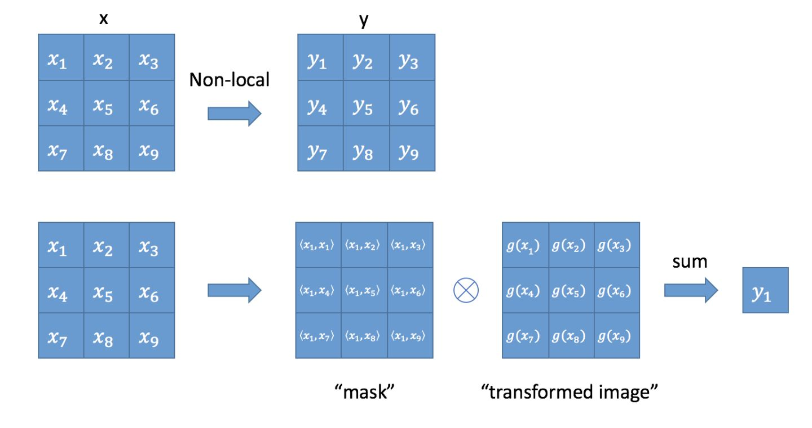
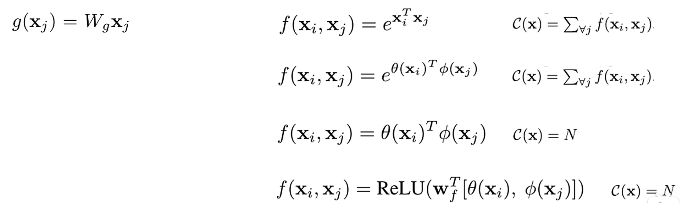
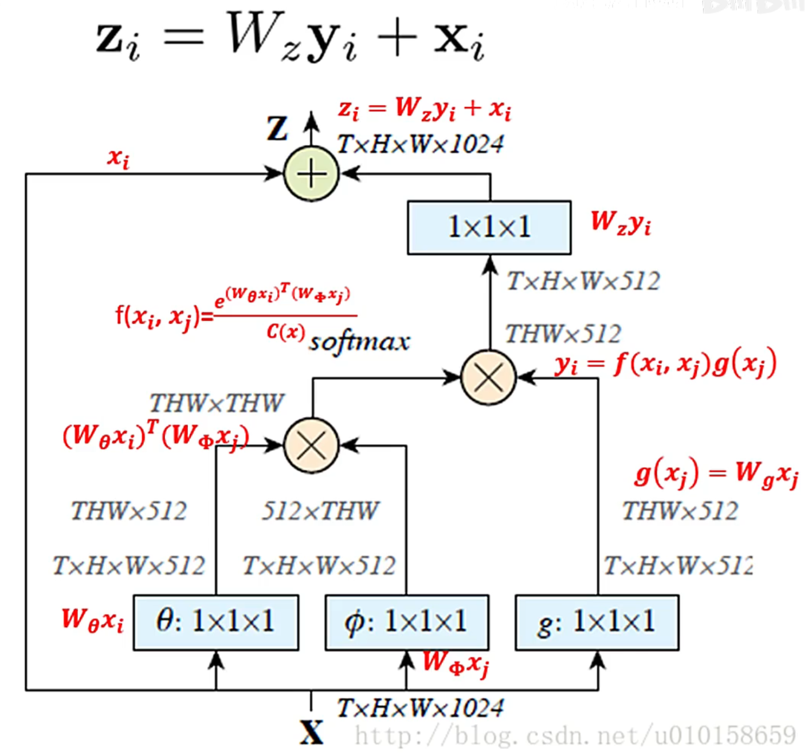
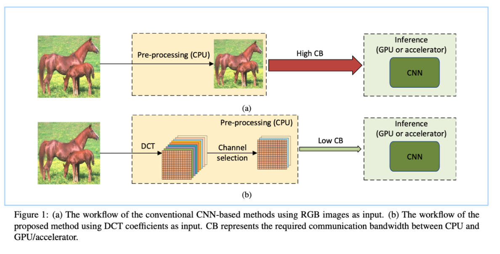
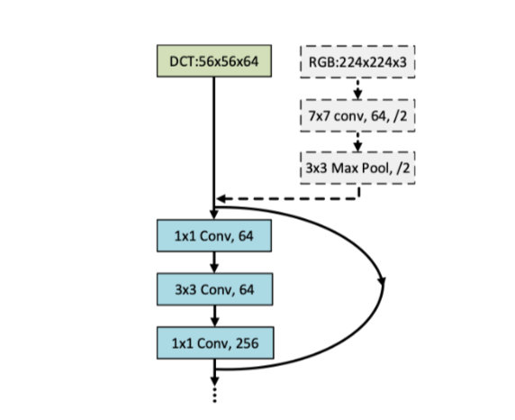
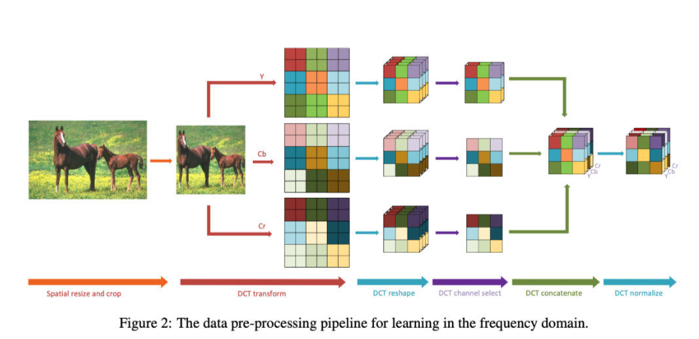

论文阅读-0x01
两篇论文的阅读笔记：《Non-local Neutral Networks》&《Learning in the Frequency Domain》
Non-local Neutral Networks
Abstract
- 传统卷积操作和循环操作都是针对一个局部图像邻域进行操作， 以卷积操作为例，它的感受野大小就是卷积核大小，只考虑局部区域
- 所以作者在本文中提出了一种非局部的方式来捕获远程依赖关系。
- 将某个位置的响应由所有位置的特征的加权平均计算得到
- 对于顺序数据（语音，文本）：使用循环操作来建立远程依赖模式
- 对于图像数据：通过深层卷积运算形成接收场来模拟长距离依赖
- 上述两种处理模式：都是通过不断重复，通过数据传播信号，捕获远程依赖关系
- 作者提出的非局部运算是计算机视觉中经典的非局部均值运算（Non-local means）的一种概括
- 可以将其添加到深度神经网络的较早部分
- 优点：
- 可以直接计算任意两个位置之间的相互作用来捕获远程依赖关系
- 即使只有很少的层数，依然有效，并能达到最佳的效果
- 可以保持可变的输入大小，并且可以轻松的与其他操作结合使用
Non-local Neutral Networks
- 公式定义：
- $ y_i = \frac{1}{C (x)}\sum\limits_{\forall j} f(x_i, y_j)g(x_j) $
- i为要计算其相应输出位置的索引，j是枚举所有可能位置的索引
- x为输入信号（文本、图像或特征图等），y是与x大小相同的输出信号
- 成对函数f，计算i与所有j之间的标量（表示关联程度，相似度）
- g计算位置j处输入信号的表示形式（线性映射， 实际网络中用一个1x1卷积实现）
- C(x)进行归一化
- 和全连接不同，fc仅是使用学习的权重，而不是使用函数；另外该公式支持可变大小的输入，并在输出中保持相应的大小，而fc需要固定大小，并且会丢失相应位置的对应关系（例如位置i处到）

- 类似attention的实现，为了计算输出层的一个点，需要将输入的每个点都考虑一遍

- 论文实验结果表明，f的不同选择对Non-local的结果没有太大影响，表明Non-local这种行为本身才是提升模型的关键因素
- 其中g进行了一个矩阵相乘，也就是一个空间编码
- f则是遵循非局部均值和双边滤波
- Non-local Block

- 是上面的Non-local操作，然后给一个权重矩阵，再加上残差结构
- Non-loca可以转化为矩阵运算乘法+卷积运算，对比for 循环提升效率
- 与全连接层的关系
- Non-local Block利用两个点的相似性对每个位置的特征做加权
- 全连接层则是利用position-related的weight对每个位置做加权
- 任意两点的相似性仅跟两点的位置索引有关，即
- g是identity函数，
- 归一化系数为1。归一化系数跟输入无关，全连接层不能处理任意尺寸的输入
Learning in the Frequency Domain
Abstract
- 传统CNN网络在空间域上进行操作，受到显存限制，输入图像不能过大。不然会在预处理阶段使用下采样，损失很多图像信息
- 论文提出了一种方法： 将RGB图像在CPU上进行预处理，首先转换到YCbCr颜色空间，然后转换为频域（ DCT，离散余弦变换 ）。这样同一频率的所有分量都被分组到一个channel中，生成了多个channel，而且中某些channel的权重更大，因此在其中进行筛选。

- 论文证明了频域中的输入特征可以以最小的修改应用于空间域中开发的所有现有CNN模型
- 只需要删除CNN的输入层部分，然后保留网络后面部分的残差block。
- 将第一个残差层作为输入层的下一部分，并且需要修改输入通道的数量以适合DCT系数输入的尺寸。‘
- 这样，修改后的模型可以保持与原始模型相似的参数计数和计算复杂度。

- 移除了传统ResNet-50中的三个输入层（灰色虚线框），以接受56×56×64 DCT输入
pre- treatment
- 在预处理中，传统的预处理流程和增强流程依旧可以正常使用（ 包括图像大小调整，裁剪和翻转 等）
- DCT transform：然后将图像转换为YCbCr颜色空间，也就是频域
- DCT reshape：之后，将相同频率的二维DCT系数分组到一个channel，以形成三维DCT立方体
- DCT channel select：通过通道选择，选择了影响较大的频道的子集
- 该功能模块叫dynamic gate model，实际上就是SE-Net中提出的SE-Block
- DCT concatenate ： YCbCr颜色空间中的选定channel被concat在一起以形成一个张量
- DCT normalize： 最后，通过从训练数据集计算出的均值和方差对每个channel进行归一化

Experiments
- 与高频频道（索引较大的框）相比，低频频道（索引较小的框）的选择频率更高。 这表明对于视觉推理任务而言，低频通道通常比高频通道更具信息性
- 与色度分量Cb和Cr中的频道相比，模型更频繁地选择亮度分量Y中的频道。 这表明亮度分量对于视觉推理任务更具参考价值
- 热图在分类和分割任务之间共享一个公共模式。 这表明上述两个观察结果并非特定于一项任务，很可能对更高层次的视觉任务具有普遍性
- 这些观察结果暗示CNN模型可能确实表现出与人类视觉类似的特征，并且针对人眼的图像压缩标准（例如JPEG）也可能适用于CNN模型。